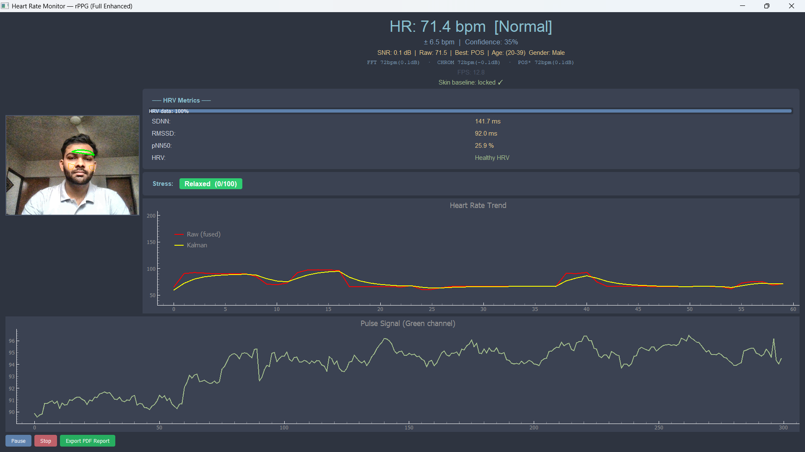

Remote Photoplethysmography (rPPG) recovers heart rate from subtle periodic color changes in facial skin caused by pulsatile blood flow, captured by a standard webcam — no contact required.
Existing systems implement only a single estimation method and provide raw BPM with no clinical context. This project addresses eight literature-identified gaps by implementing four signal processing methods, adding HRV analysis, stress detection, and automated PDF clinical reporting — all on consumer hardware, no GPU needed.
Total improvement: +11.2 dB (SNR in dB)
Our system turns any standard laptop camera into a real-time, non-contact heart monitor with clinically relevant accuracy — no wearable, no electrode, no cost. It runs entirely in Python on a basic laptop, making it accessible for home health monitoring and telemedicine.
Future directions: End-to-end deep learning models (PhysNet, RhythmNet) as a 5th fusion method; SpO₂ and respiratory rate extraction; Android/iOS deployment via Flutter + ONNX; Raspberry Pi 4 for embedded kiosks; Streamlit web dashboard with REST API for telemedicine platform integration.
Dataset: UBFC-rPPG (42 subjects) · CMS50E pulse oximeter GT · Window: 10s sliding · No GPU
| Method | MAE (BPM) | RMSE (BPM) | Pearson r |
|---|---|---|---|
| FFT (Green) | 8.11 | 10.92 | 0.891 |
| CHROM | 5.43 | 7.88 | 0.943 |
| POS | 6.02 | 8.51 | 0.930 |
| ICA | 7.50 | 9.80 | 0.912 |
| ★ SNR Fusion | 4.15 | 5.97 | 0.973 |
Key Outcomes
PyQt5-based real-time monitoring interface displaying live BPM, HRV metrics (SDNN/RMSSD/pNN50), stress level classification, heart rate trend visualization with Kalman filtering, and pulse signal waveform from the green channel. The GUI supports multi-region ROI visualization, per-algorithm SNR metrics, and one-click PDF clinical report export.
